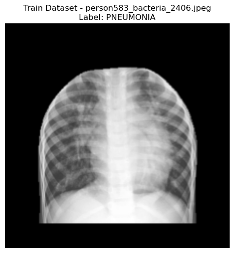
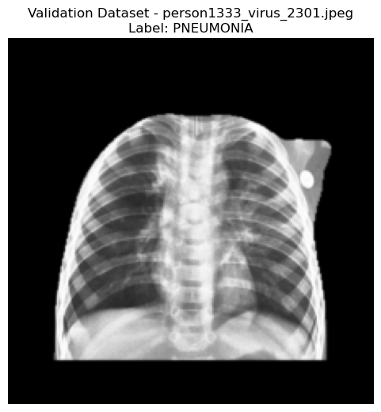
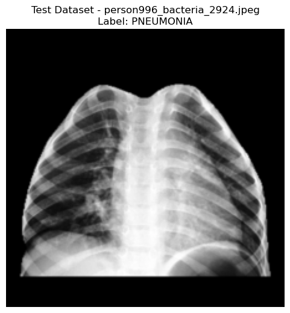
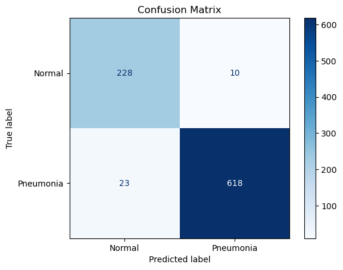
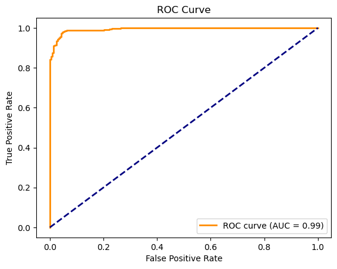
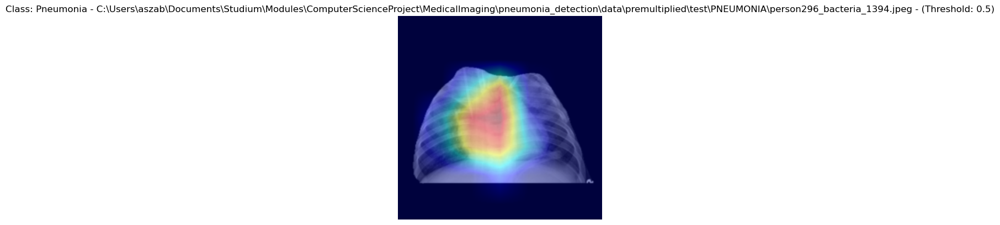
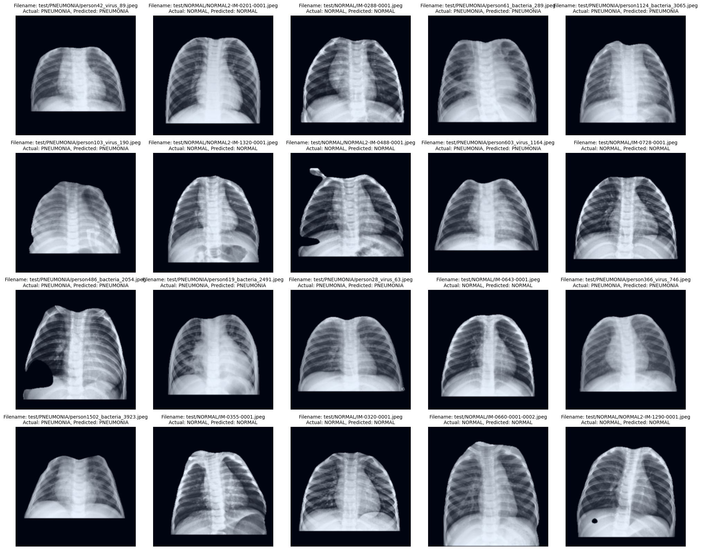

Import Libraries
[1]:
import os
from IPython import get_ipython
get_ipython().run_line_magic("matplotlib", "inline")
from torchvision.transforms import Compose, Resize, InterpolationMode, ToTensor, Normalize, RandomCrop, RandomHorizontalFlip
import torch
from code.classifier import CNNPneumoniaClassifier, Config
from code.plot_random_image import plot_random_image_from_loader
from code.classify_random_images import plot_random_images_with_labels
from sklearn.metrics import ConfusionMatrixDisplay, confusion_matrix
import matplotlib.pyplot as plt
C:\Users\aszab\miniconda3\envs\classifier\Lib\site-packages\tqdm\auto.py:21: TqdmWarning: IProgress not found. Please update jupyter and ipywidgets. See https://ipywidgets.readthedocs.io/en/stable/user_install.html
from .autonotebook import tqdm as notebook_tqdm
[2]:
# Load the TensorBoard
%reload_ext tensorboard
%load_ext tensorboard
The tensorboard extension is already loaded. To reload it, use:
%reload_ext tensorboard
[3]:
# Enable CUDA Launch Blocking
os.environ['CUDA_LAUNCH_BLOCKING'] = '1'
# Set float32 matrix multiplication precision to 'medium' to utilize Tensor Cores
torch.set_float32_matmul_precision('medium')
torch.serialization.add_safe_globals([Compose, Resize, set, Config, InterpolationMode, ToTensor, Normalize, RandomHorizontalFlip])
Check GPU Availability
[4]:
gpu_info = !nvidia-smi
gpu_info = '\n'.join(gpu_info)
if gpu_info.find('failed') >= 0:
print('Not connected to a GPU')
else:
print(gpu_info)
Sun Jan 19 15:49:53 2025
+-----------------------------------------------------------------------------------------+
| NVIDIA-SMI 565.90 Driver Version: 565.90 CUDA Version: 12.7 |
|-----------------------------------------+------------------------+----------------------+
| GPU Name Driver-Model | Bus-Id Disp.A | Volatile Uncorr. ECC |
| Fan Temp Perf Pwr:Usage/Cap | Memory-Usage | GPU-Util Compute M. |
| | | MIG M. |
|=========================================+========================+======================|
| 0 NVIDIA GeForce RTX 4070 Ti WDDM | 00000000:02:00.0 Off | N/A |
| 0% 43C P8 6W / 285W | 2033MiB / 12282MiB | 0% Default |
| | | N/A |
+-----------------------------------------+------------------------+----------------------+
+-----------------------------------------------------------------------------------------+
| Processes: |
| GPU GI CI PID Type Process name GPU Memory |
| ID ID Usage |
|=========================================================================================|
| 0 N/A N/A 2180 C+G ....Search_cw5n1h2txyewy\SearchApp.exe N/A |
| 0 N/A N/A 2460 C+G ...CBS_cw5n1h2txyewy\TextInputHost.exe N/A |
| 0 N/A N/A 2544 C+G ...40.0_x64__zpdnekdrzrea0\Spotify.exe N/A |
| 0 N/A N/A 3096 C+G ..._x64__kzf8qxf38zg5c\Skype\Skype.exe N/A |
| 0 N/A N/A 5112 C+G ...oogle\Chrome\Application\chrome.exe N/A |
| 0 N/A N/A 6060 C+G ...ft Office\root\Office16\WINWORD.EXE N/A |
| 0 N/A N/A 7084 C+G ...64__8wekyb3d8bbwe\CopilotNative.exe N/A |
| 0 N/A N/A 7556 C+G ...ekyb3d8bbwe\PhoneExperienceHost.exe N/A |
| 0 N/A N/A 11532 C+G C:\Windows\explorer.exe N/A |
| 0 N/A N/A 12184 C+G C:\Program Files\NordVPN\NordVPN.exe N/A |
| 0 N/A N/A 15560 C+G ...5n1h2txyewy\ShellExperienceHost.exe N/A |
| 0 N/A N/A 15768 C+G ...t.LockApp_cw5n1h2txyewy\LockApp.exe N/A |
| 0 N/A N/A 16584 C+G ...\cef\cef.win7x64\steamwebhelper.exe N/A |
| 0 N/A N/A 17988 C+G ...951_x64__8wekyb3d8bbwe\ms-teams.exe N/A |
| 0 N/A N/A 18004 C+G ...n\131.0.2903.146\msedgewebview2.exe N/A |
| 0 N/A N/A 18284 C+G ...n\131.0.2903.146\msedgewebview2.exe N/A |
| 0 N/A N/A 19220 C+G ...951_x64__8wekyb3d8bbwe\ms-teams.exe N/A |
| 0 N/A N/A 25640 C+G ....Search_cw5n1h2txyewy\SearchApp.exe N/A |
| 0 N/A N/A 26120 C+G ...ns\PyCharm 2024.3\bin\pycharm64.exe N/A |
| 0 N/A N/A 26376 C+G ...b3d8bbwe\Microsoft.Media.Player.exe N/A |
| 0 N/A N/A 26392 C+G ...oogle\Chrome\Application\chrome.exe N/A |
| 0 N/A N/A 27660 C+G ...n\131.0.2903.146\msedgewebview2.exe N/A |
| 0 N/A N/A 28504 C+G ...les\Microsoft OneDrive\OneDrive.exe N/A |
| 0 N/A N/A 29108 C+G ..._x64__kzf8qxf38zg5c\Skype\Skype.exe N/A |
| 0 N/A N/A 32008 C ...niconda3\envs\classifier\python.exe N/A |
| 0 N/A N/A 38384 C ...niconda3\envs\classifier\python.exe N/A |
+-----------------------------------------------------------------------------------------+
Setup Model
[5]:
config = Config(
backbone_name="resnet50",
transfer_learning=True,
learning_rate=1e-4,
batch_size=20,
max_epochs=50,
weight_decay=1e-4,
dropout=0.2,
num_workers=16,
model_name="ResNet50_gradual_unfreeze",
version="001",
optimizer_name = "sgd",
use_class_weights=True,
image_res=224,
patience = 10,
image_type=3,
gradually_unfreeze=True,
unfreeze_interval=5,
num_layers_to_unfreeze=2,
frozen_lr=1e-6, # Learning rate for frozen layers
unfrozen_lr=1e-5 # Learning rate for unfrozen layers
)
model = CNNPneumoniaClassifier(config)
device = torch.device("cuda" if torch.cuda.is_available() else "cpu")
model = model.to(device)
Using 16bit Automatic Mixed Precision (AMP)
GPU available: True (cuda), used: True
TPU available: False, using: 0 TPU cores
HPU available: False, using: 0 HPUs
Plot random images from all datasets
[6]:
plot_random_image_from_loader(model.train_loader.dataset, "Train Dataset")

[7]:
plot_random_image_from_loader(model.val_loader.dataset, "Validation Dataset")

[8]:
plot_random_image_from_loader(model.test_loader.dataset, "Test Dataset")

Train Model
[9]:
# Train Model - Uncomment to train model
#model.train_model()
#torch.save({
# "state_dict": model.state_dict(),
# "config": vars(config)
#}, f"../models/{config.model_name}_final.pt")
Load Model
[10]:
checkpoint = torch.load(f"../models/{config.model_name}_final.pt")
loaded_config = Config(**checkpoint["config"])
model = CNNPneumoniaClassifier(loaded_config)
model.load_state_dict(checkpoint["state_dict"])
model.eval()
model = model.to(device)
C:\Users\aszab\AppData\Local\Temp\ipykernel_36144\3427658734.py:1: FutureWarning: You are using `torch.load` with `weights_only=False` (the current default value), which uses the default pickle module implicitly. It is possible to construct malicious pickle data which will execute arbitrary code during unpickling (See https://github.com/pytorch/pytorch/blob/main/SECURITY.md#untrusted-models for more details). In a future release, the default value for `weights_only` will be flipped to `True`. This limits the functions that could be executed during unpickling. Arbitrary objects will no longer be allowed to be loaded via this mode unless they are explicitly allowlisted by the user via `torch.serialization.add_safe_globals`. We recommend you start setting `weights_only=True` for any use case where you don't have full control of the loaded file. Please open an issue on GitHub for any issues related to this experimental feature.
checkpoint = torch.load(f"../models/{config.model_name}_final.pt")
Using 16bit Automatic Mixed Precision (AMP)
GPU available: True (cuda), used: True
TPU available: False, using: 0 TPU cores
HPU available: False, using: 0 HPUs
Test Model
[11]:
# Run testing
print("Testing the model...")
checkpoint_path = f"../checkpoints/{config.model_name}.ckpt"
test_metadata = model.test_model(checkpoint_path) # Ensure this uses the correct test_loader
Testing the model...
LOCAL_RANK: 0 - CUDA_VISIBLE_DEVICES: [0]
Testing DataLoader 0: 100%|██████████| 44/44 [00:04<00:00, 9.94it/s]
┏━━━━━━━━━━━━━━━━━━━━━━━━━━━┳━━━━━━━━━━━━━━━━━━━━━━━━━━━┓ ┃ Test metric ┃ DataLoader 0 ┃ ┡━━━━━━━━━━━━━━━━━━━━━━━━━━━╇━━━━━━━━━━━━━━━━━━━━━━━━━━━┩ │ test_acc_epoch │ 0.9635949730873108 │ │ test_f1_epoch │ 0.9747633934020996 │ │ test_precision_epoch │ 0.9856459498405457 │ │ test_recall_epoch │ 0.9641185402870178 │ │ test_specificity_epoch │ 0.9621848464012146 │ └───────────────────────────┴───────────────────────────┘
Plot Confusion Matrix
[12]:
def plot_confusion_matrix(model, dataloader, class_names):
all_preds = []
all_labels = []
# Get predictions and true labels
device = torch.device("cuda" if torch.cuda.is_available() else "cpu")
model = model.to(device)
model.eval()
with torch.no_grad():
for data, labels, _ in dataloader:
data = data.cuda() # Move data to GPU if available
labels = labels.cuda()
preds = torch.argmax(model(data), dim=1)
all_preds.extend(preds.cpu().numpy())
all_labels.extend(labels.cpu().numpy())
# Compute confusion matrix
cm = confusion_matrix(all_labels, all_preds)
disp = ConfusionMatrixDisplay(cm, display_labels=class_names)
disp.plot(cmap="Blues")
plt.title("Confusion Matrix")
plt.show()
# Call this after training/testing
plot_confusion_matrix(model, model.test_loader, class_names=["Normal", "Pneumonia"])

Plot ROC/AUC Score
[13]:
from sklearn.metrics import roc_curve, roc_auc_score
def plot_roc_auc(model, dataloader):
all_preds = []
all_labels = []
# Get predictions and true labels
model.eval()
with torch.no_grad():
for data, labels, _ in dataloader:
data = data.cuda()
labels = labels.cuda()
preds = model(data)
probs = torch.softmax(preds, dim=1)[:, 1] # Probabilities for class 1
all_preds.extend(probs.cpu().numpy())
all_labels.extend(labels.cpu().numpy())
# Compute ROC curve and AUC
fpr, tpr, _ = roc_curve(all_labels, all_preds)
auc = roc_auc_score(all_labels, all_preds)
# Plot ROC curve
plt.figure()
plt.plot(fpr, tpr, color='darkorange', lw=2, label=f'ROC curve (AUC = {auc:.2f})')
plt.plot([0, 1], [0, 1], color='navy', lw=2, linestyle='--')
plt.xlabel('False Positive Rate')
plt.ylabel('True Positive Rate')
plt.title('ROC Curve')
plt.legend(loc="lower right")
plt.show()
plot_roc_auc(model, model.test_loader)

Plot Gradcam
[14]:
for param in model.feature_extractor.parameters():
param.requires_grad = True
model.visualize_gradcam(num_samples=4, target_layer=7, class_names=["Normal", "Pneumonia"], threshold=0.5)

Evaluate Metrics in Tensorboard
[15]:
# Load TensorBoard extension
%load_ext tensorboard
# Specify the log directory
log_dir = f"tb_logs/{config.model_name}"
# Start TensorBoard
%tensorboard --logdir {log_dir}
The tensorboard extension is already loaded. To reload it, use:
%reload_ext tensorboard
Reusing TensorBoard on port 6006 (pid 31604), started 1 day, 5:06:46 ago. (Use '!kill 31604' to kill it.)
Classify random images
[16]:
plot_random_images_with_labels(model, model.test_loader, num_images=20)
